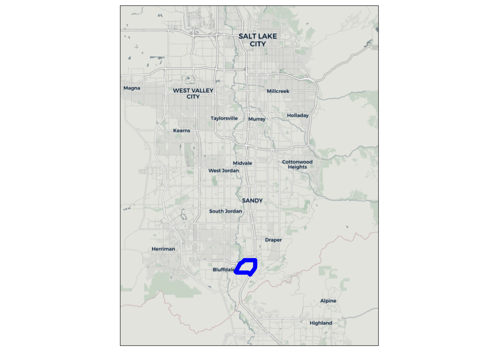

4 Scenario 1: Change in Land Use
Near Draper, Utah there is a defunct prison site that is slated for redevelopment (see Figure 4.1). The 600-acre site will be developed into a multi-use residential and commercial area, with an emphasis on walkability and transit. This development is known as The Point, and is the basis for the first model scenario in this paper.
This scenario models the change in land use that a development such as The Point would create. Though the actual development plans for The Point include an expansion of transit services, only the additional households and jobs created from this development are modeled in this scenario. The data for the land use changes comes from the WFRC land use forecast, which is in turn based on projections from the Point of the Mountain State Land Authority (state_land_authority_framework_2021?). The development is expected to be fully completed by 2050, and so the 2050 WFRC land use and socioeconomic data projections are used for this site.
The site consists of 5 TAZs, as shown in Figure 4.2. Table 4.1 shows the households, population, and employment by type of these TAZs in both the baseline scenario and with the new land use. Notably, there were no households and relatively few jobs in these TAZs in the baseline scenario. No changes other than to the land use/socioeconomic data in these 5 TAZs was made relative to the baseline scenario.

| TAZ | TOTHH | HHPOP | RETEMP | INDEMP | OTHEMP | TOTEMP |
|---|---|---|---|---|---|---|
| 2138 | 0 | 0 | 0 | 0 | 0 | 0 |
| 2140 | 0 | 0 | 0 | 0 | 0 | 0 |
| 2141 | 0 | 0 | 0 | 0 | 277 | 277 |
| 2149 | 0 | 0 | 0 | 0 | 796 | 796 |
| 2170 | 0 | 0 | 3 | 359 | 71 | 433 |
| TAZ | TOTHH | HHPOP | RETEMP | INDEMP | OTHEMP | TOTEMP |
|---|---|---|---|---|---|---|
| 2138 | 7431 | 17811 | 4.33 | 0.0 | 76.2 | 80.5 |
| 2140 | 0 | 0 | 610.33 | 4.0 | 7389.8 | 8004.2 |
| 2141 | 0 | 0 | 1449.33 | 0.0 | 5363.2 | 6812.5 |
| 2149 | 0 | 0 | 962.00 | 1.5 | 7372.5 | 8336.0 |
| 2170 | 0 | 0 | 7.00 | 357.3 | 106.3 | 470.7 |
4.1 Scenario Creation
In the WFRC model, this change is trivial to implement. The model uses the land use/socioeconomic data directly, so the only adjustment needed is replacing the data for the specific TAZs with the 2050 data. As noted previously, all other TAZs have the same land use data as in the 2019 baseline scenario.
ActivitySim requires two changes for this scenario. The first is an update to the TAZ-level land use and socioeconomic data, which is identical to the process for the WFRC model. The second is an updated synthetic population. In order to keep consistency between model scenarios, a new population was created only for the 5 affected TAZs and joined to the existing synthetic population. There were no individuals or households in the affected zones in the existing synthetic population, so no individuals or households needed to be removed before joining the two populations.
Creating the new synthetic population followed a similar process as in the baseline scenario (Section 3.2.1), but used the new land use data as new TAZ-level controls. However, many of the controls for PopulationSim use tract-level data from the Census, and existing Census data for these controls is unrepresentative of the new development. Because of this, the Census tract covering the Gateway area in Salt Lake City (see ?fig-gateway-tract) is used to represent the new development patterns at The Point. The income distribution, etc. of this area will therefore match that of the Gateway area, though the TAZ-level controls and land use/socioeconomic data will match the WFRC projections for 2050.
? Note in realistic scenario you could use just the land use forecast as controls directly, rahter than the whole census shenanigans but we didn’t do that since we wanted the models to be independent.
4.2 Scenario Analysis
In a trip-based model, it is relatively easy to calculate person-miles traveled from trips produced in the new development zones (see Figure 4.3), and where they are being attracted (see Figure 4.5 (a)). However, those living in the new development make many more trips than only those produced in their home zone. In a trip-based model, this is modeled with “non–home-based” trips. However, it is difficult to know how best to distribute non–home-based trips, since by definition these trips do not have an origin or destination in the zone that generated them. cite something about how it’s a problem

By contrast, since an ABM models individuals explicitly, it is easy to follow the daily trips of any individual. ?fig-lu-personmiles-abm shows a similar plot of person-miles traveled, but of all trips made by individuals living in the new development zones. We can additionally make a distinction between trips produced in the individuals’ home zones and those produced elsewhere. Note that in a trip-based model, a round-trip from home to work and back is regarded as two trips produced in the home zone. ActivitySim does not deal with productions and attractions in the same way, so for comparison between models we are counting a trip with an origin or destination in the home zone as produced by that zone (e.g. in Figures 4.4 and (asim_lu_new_desire_map?)).

Figure 4.5 shows desire line plots of trips generated by the new development zones. For home-based trips, it is easy to see where trips are produced and attracted to, and this is shown in Figure 4.5 (a). However, the non–home-based trips are more difficult to analyze. Because non–home-based trips are relocated to zones other than where they were generated, it is impossible to filter to only those non–home-based trips generated by the new zones.
The best approach is to take the difference in non–home-based trips between the scenarios (Figure 4.5 (b)), though this presents two problems. The first is that for real-world analyses, where land use changes are not isolated, it becomes impossible to tell which non–home-based trips are generated by which developments, as the trips are seen only in aggregate. The second problem is with the distribution of the non–home-based trips. Though the exact distribution process depends on the specific model used, Figure 4.5 (b) shows inconsistencies with the approach in the WFRC model. Between the baseline scenario and the updated land use scenario, many pairs of zones saw an increase in the number of non–home-based trips between them, but other pairs saw a decrease. Additionally, all pairs of zones that saw an increase in non–home-based trips include a production or attraction to the new development zones. The WFRC model redistributes non–home-based trips as part of its network assignment step, which occurs after all trip matrices are created. it’s either this or the only increase in nhb trips is from non-residents, which doesn’t make much sense. The only measure of the increase of non–home-based trips after redistribution is therefore in the highway network, reported as roadway volumes. This compounds with the first problem and makes it even more difficult to tell where the non–home-based trips are coming from.
As mentioned, an ABM allows for tracking of individuals explicitly, and so analyzing non–home-based trips is much more straightforward. ?fig-lu-desire-abm shows desire lines of all trips made by individuals living in the new development zones, colored by place of production. It is also easy to see how trips are related to each other, as each individual has a specific sequence of trips. The individual nature of an ABM avoids entirely the problems trip-based models have with non–home-based trips. In a complicated land use forecast, each development’s full contribution to network congestion can be analyzed individually.